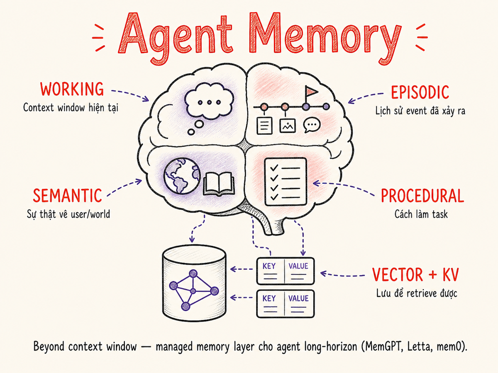

Agent Memory Architectures
Context window chỉ là RAM tạm thời — agent thực sự cần bộ nhớ dài hạn, phân tầng, có khả năng viết và truy xuất thông minh. Khám phá toàn bộ memory taxonomy, MemGPT/Letta pattern, và cách xây dựng memory layer production-ready.

25.1 Tại sao memory quan trọng hơn context window
Context window là không gian làm việc tức thời của LLM — tất cả những gì model "thấy" trong một lần inference. Với các model hiện đại như Claude (200K tokens) hay Gemini (1M+ tokens), context window đã rất lớn. Nhưng vẫn không đủ — và đây là lý do:
- Cost: 200K tokens × $15/M = $3 mỗi lần gọi API — chưa kể output
- Latency: Long context inference chậm hơn đáng kể
- Lost-in-the-middle: LLM kém chú ý đến thông tin ở giữa context dài
- Noise: Thông tin irrelevant làm loãng signal quan trọng
- Cross-session: Context reset sau mỗi conversation — không có "ký ức" lâu dài
- Persistence: Thông tin tồn tại qua nhiều sessions, ngày, tháng
- Selectivity: Chỉ inject thông tin relevant vào context tại thời điểm cần
- Scale: Lưu hàng triệu facts, chỉ retrieve top-K cần thiết
- Personalization: Nhớ preferences, history, relationships của từng user
- Cost control: Context nhỏ hơn = cheaper inference
Context window = RAM (nhanh, nhỏ, volatile). Memory stores = disk/database (chậm hơn, lớn hơn, persistent). Agent thông minh biết cái gì nên giữ trong RAM, cái gì nên page out ra disk, và cách page-in khi cần. Đây chính là nền tảng của MemGPT pattern ở §25.6.
Thực tế production cho thấy: agent không có memory layer đúng nghĩa sẽ "quên" người dùng sau mỗi session, lặp lại câu hỏi đã hỏi, không học được từ sai lầm trước. Memory là thành phần phân biệt chatbot stateless với personal AI assistant thực sự.
25.2 Memory taxonomy — mượn từ khoa học nhận thức
Khoa học nhận thức (cognitive science) phân loại bộ nhớ con người thành nhiều hệ thống khác nhau. AI Engineering mượn framework này để thiết kế memory architecture cho agent — vì sự tương đồng không chỉ là ẩn dụ, mà còn phản ánh các trade-off kỹ thuật thực tế.
| Memory type | Tương đương con người | Storage trong AI | Lifetime | Truy xuất |
|---|---|---|---|---|
| Working | Bộ nhớ làm việc ngắn hạn — đang giải toán trong đầu | Context window (tokens) | Duration of one LLM call | Instant — already in context |
| Episodic | Nhớ sự kiện cụ thể — "hôm qua tôi ăn phở" | KV store, document DB with timestamps | Configurable (days → forever) | Key lookup or recency query |
| Semantic | Kiến thức chung — "phở là món ăn Việt Nam" | Vector DB, SQL, graph DB | Permanent until pruned | Semantic search, exact query |
| Procedural | Kỹ năng vô thức — biết đi xe không cần nghĩ | System prompt, fine-tuned weights, few-shot examples | Long-term (model lifetime) | Always present (in-prompt) or activated by pattern |
Con người không phân biệt rõ ràng khi dùng từng loại bộ nhớ — chúng hoạt động song song và bổ trợ nhau. Agent tốt cũng vậy: không chỉ dùng vector search hay chỉ inject summary — phải phối hợp nhiều loại memory, mỗi loại phù hợp cho từng loại thông tin.
25.3 Working memory = quản lý context window
Working memory của agent là context window — cố định trong một inference call. Khi conversation kéo dài, context đầy và agent phải quyết định: giữ cái gì, bỏ cái gì, compress cái gì.
Truncation đơn giản — và vì sao không đủ
Cách naive nhất: khi context đầy, xóa các tin nhắn cũ nhất. Vấn đề:
- Mất context quan trọng — user đặt yêu cầu từ lúc đầu, agent "quên" sau vài chục turns
- Mất "thread" của conversation — agent không biết tại sao đang làm điều gì
- Tool results từ sớm bị xóa — nhưng chúng vẫn đang ảnh hưởng đến task hiện tại
Summary-of-summaries (hierarchical compression)
Thay vì truncate, compress theo tầng:
# Tier 1: Summarize every N turns into a "chunk summary"
def maybe_compress(history: list, llm, chunk_size: int = 10) -> list:
if token_count(history) < MAX_TOKENS * 0.7:
return history
# Keep last chunk_size turns verbatim
recent = history[-chunk_size:]
to_compress = history[:-chunk_size]
# Compress older turns into summary
chunk_summary = llm.invoke(
f"Summarize the following conversation segment into 3-5 concise bullet points. "
f"Preserve decisions made, facts established, and open questions:\n\n{to_compress}"
)
summary_msg = {"role": "system", "content": f"[Earlier context summary]\n{chunk_summary}"}
return [summary_msg] + recent
# Tier 2: If multiple summaries accumulate, summarize the summaries
def consolidate_summaries(summaries: list[str], llm) -> str:
combined = "\n\n".join(summaries)
return llm.invoke(
f"Consolidate these conversation summaries into a single coherent summary:\n\n{combined}"
)Hierarchical working memory — 3 tầng
Một pattern mạnh hơn chia context window thành 3 vùng có mức ưu tiên khác nhau:
25.4 Conversational memory strategies
Có 4 strategies chính để quản lý lịch sử conversation, mỗi loại phù hợp với use case khác nhau:
Full Transcript — Giữ toàn bộ lịch sử
Mọi turn đều được giữ trong context, không compress, không cắt bỏ.
- Đơn giản nhất để implement
- Model có đủ context để trả lời chính xác
- Không mất thông tin
- Cost tăng theo số turns (O(n²) total tokens)
- Hit context limit sau ~50–200 turns tùy model
- "Lost in the middle" với conversations rất dài
Short conversations, demo/prototype, hoặc khi model có context window rất lớn (Gemini 1M+) và cost không phải vấn đề.
Sliding Window — Giữ K turns gần nhất
Chỉ giữ N turns gần nhất (thường 10–20). Các turns cũ hơn bị xóa hoàn toàn.
# Simple sliding window
MAX_TURNS = 15
def trim_history(messages: list, system_prompt: str) -> list:
# Always keep system prompt at index 0
user_turns = [m for m in messages if m["role"] != "system"]
return [{"role": "system", "content": system_prompt}] + user_turns[-MAX_TURNS * 2:]- Cost có thể dự đoán được
- Latency ổn định
- Dễ implement
- Mất context quan trọng đột ngột
- Agent "quên" đầu conversation
- Không phù hợp cho long-running tasks
Summary Memory — LLM tóm tắt định kỳ
Khi history vượt threshold, dùng LLM call riêng để tóm tắt toàn bộ rồi thay thế.
SUMMARY_TRIGGER_TOKENS = 6000
async def get_context(session_id: str, llm) -> list:
history = await db.get_history(session_id)
summary = await db.get_summary(session_id) # may be None
if token_count(history) > SUMMARY_TRIGGER_TOKENS:
# Summarize all but last 4 turns
new_summary = await llm.summarize(
history=history[:-4],
existing_summary=summary,
instructions="Merge with existing summary. Keep user preferences, key decisions, open tasks."
)
await db.save_summary(session_id, new_summary)
return build_context(summary=new_summary, recent=history[-4:])
return build_context(summary=summary, recent=history)LLM summarizer quyết định cái gì "quan trọng" — có thể bỏ qua detail mà sau này mới thấy cần. Luôn giữ raw turns của N turns gần nhất bên cạnh summary.
Summary + Raw Hybrid — Pattern production-recommended
Kết hợp rolling summary của lịch sử cũ với verbatim của turns gần đây. Đây là pattern được khuyến nghị nhất trong production.
# Context structure:
# [system_prompt]
# [memory_injection] ← từ vector search (§25.9)
# [rolling_summary] ← LLM-compressed history
# [recent_turns] ← verbatim, last 8–12 turns
def build_hybrid_context(session, memory_store, llm) -> list:
relevant_memories = memory_store.search(
query=session.last_user_message,
k=5
)
memory_block = format_memories(relevant_memories)
return [
{"role": "system", "content": session.system_prompt},
{"role": "system", "content": f"[Relevant memories]\n{memory_block}"},
{"role": "system", "content": f"[Conversation summary]\n{session.summary}"},
*session.recent_turns[-10:]
]Hầu hết serious AI applications (Cursor, Claude.ai, ChatGPT) dùng variant của hybrid pattern này. Summary + recent verbatim + memory retrieval là tổ hợp tối ưu cho cost/quality tradeoff.
25.5 Long-term memory stores
Long-term memory không sống trong context — nó sống trong các external stores chuyên dụng. Mỗi loại store có trade-off về retrieval semantics, speed, và use case:
| Store type | Technology ví dụ | Retrieval | Best for | Limitation |
|---|---|---|---|---|
| Vector (semantic) | Qdrant, Weaviate, Pinecone, pgvector | Cosine similarity → top-K relevant | Facts, docs, episodic events — tìm theo ý nghĩa | Không chính xác 100%; embedding model dependency |
| KV (exact) | Redis, DynamoDB, Firestore | Exact key lookup O(1) | User profiles, known entities, cache | Không tìm được bằng nội dung; cần biết key trước |
| Graph (relational) | Neo4j, Amazon Neptune, Memgraph | Graph traversal — relationships | Entities với relationships phức tạp; knowledge graphs | Setup phức tạp; query language riêng (Cypher) |
| Structured (rows) | PostgreSQL, MySQL, SQLite | SQL query — filter, aggregate, join | Structured data, transactions, aggregations | LLM cần generate SQL đúng; schema phải ổn định |
| Document | MongoDB, Firestore, CouchDB | Field query, full-text search | Flexible schema, nested documents, session records | Semantic search yếu hơn vector; indexing cần care |
Production memory systems thường kết hợp nhiều stores: Vector DB cho semantic retrieval, KV/SQL cho exact facts (user name, preferences), Document DB cho session records. mem0, Zep, Letta đều implement exactly this hybrid approach internally.
25.6 MemGPT pattern — OS analogy
MemGPT (Packer et al., UC Berkeley, 2023) đưa ra một metaphor mạnh mẽ: LLM như một CPU có RAM hạn chế (context window), và cần quản lý virtual memory để làm việc với thông tin vượt quá RAM capacity.
Giống như OS virtual memory manager page-in/page-out pages từ disk, MemGPT cho phép LLM tự quyết định khi nào cần đưa thông tin từ external storage vào context, và khi nào cần lưu thông tin ra ngoài để giải phóng "RAM".
MemGPT tool calls cho memory management
Điểm độc đáo của MemGPT: LLM tự quyết định memory operations thông qua special tool calls:
# MemGPT special memory tools (giữ trong system prompt)
MEMORY_TOOLS = [
{
"name": "core_memory_append",
"description": "Append new information to the in-context persona/human memory block. "
"Use when you learn important persistent facts about the user.",
"params": {"name": "human" | "persona", "content": "string"}
},
{
"name": "archival_memory_insert",
"description": "Write information to long-term archival storage (vector DB). "
"Use when information is important but too detailed for core memory.",
"params": {"content": "string to store"}
},
{
"name": "archival_memory_search",
"description": "Search archival storage using semantic similarity.",
"params": {"query": "search query", "page": 0}
},
{
"name": "conversation_search",
"description": "Search past conversation history. Use when user references something said before.",
"params": {"query": "string", "page": 0}
}
]
# Agent system prompt includes current memory state:
SYSTEM_TEMPLATE = """
<persona>
{persona_block} # e.g., "I am an AI assistant named Sam..."
</persona>
<human>
{human_block} # e.g., "Name: Minh. Preference: Vietnamese. Timezone: +7..."
</human>
<recall_buffer>
{recent_turns} # Last N turns verbatim
</recall_buffer>
"""25.7 Letta / mem0 / Zep / cognee — so sánh
MemGPT được rebrand thành Letta (2024) với production-ready platform. Cùng lúc đó, nhiều open-source và commercial alternatives xuất hiện:
| Tool | Approach | Storage backends | Open Source | Best for | Hạn chế |
|---|---|---|---|---|---|
| Letta (MemGPT) | OS-style memory management; agent-as-stateful-OS-process; self-managing memory tools | PostgreSQL + pgvector (archival), Chroma, SQLite | Yes (Apache 2.0) | Long-running personal agents; MemGPT-style self-management | Heavy setup; overkill cho simple chatbots; niche API design |
| mem0 | Auto-extract + deduplicate memories từ conversations; layer on top of any LLM | Qdrant, Chroma, PGVector + Redis + Neo4j (graph) | Yes (Apache 2.0) | Quick integration vào existing apps; personalization use cases | Auto-extraction có thể noisy; less control over what's stored |
| Zep | Temporal knowledge graph; auto-extract entities, facts, summaries; time-aware retrieval | PostgreSQL + custom graph layer | Partially (Community + Cloud) | Conversational apps cần temporal awareness; entity tracking | Cloud version có cost; Community version limited features |
| cognee | Knowledge graph từ documents + conversations; ontology-aware; GraphRAG hybrid | Multiple (Neo4j, Qdrant, Weaviate, PG) | Yes (Apache 2.0) | Knowledge-heavy agents; complex relationship reasoning | Mới (2024); community nhỏ; complex setup |
| Custom | Build own memory layer: vector search + KV + summary logic | Bất kỳ | N/A | Full control; specific domain requirements; performance-critical | Cần build và maintain; time investment cao |
Prototype/startup: mem0 — dễ integrate, tự động extract memories, hoạt động ngay.
Production personal agent cần temporal/entity awareness: Zep.
Long-running stateful agent (vWeeks/months): Letta.
Knowledge-intensive với complex relationships: cognee.
Full control + existing infra: Build custom với Qdrant + Redis + PostgreSQL.
25.8 Memory write strategies
Biết "nên lưu cái gì" đã khó — "khi nào và cách nào lưu" còn quan trọng hơn. Có 4 write strategies chính, mỗi loại phù hợp ngữ cảnh khác nhau:
Explicit write — LLM tự gọi memory tool
LLM quyết định khi nào cần lưu memory bằng cách gọi save_memory() tool. Đây là approach của MemGPT/Letta.
# LLM tự decide: "User vừa cho tôi biết họ là developer Python → save"
# → LLM generates tool call:
{
"tool": "save_memory",
"input": {
"content": "User is a Python developer. Prefers concise code examples.",
"category": "user_profile",
"importance": "high"
}
}
# Pro: Agent chọn đúng những gì cần lưu
# Con: LLM có thể quên gọi tool, hoặc lưu thừaLLM không luôn luôn nhớ gọi memory tool. Cần hướng dẫn rõ trong system prompt và có fallback mechanism (implicit hoặc post-hoc).
Implicit write — Event-driven extraction
Sau mỗi turn (hoặc mỗi N turns), một extractor LLM riêng phân tích conversation và tự động extract memories — không cần agent chủ động gọi tool.
# Run async sau mỗi conversation turn
async def extract_memories_bg(turn: ConversationTurn, memory_store):
extraction_prompt = """Analyze this conversation turn. Extract any:
- User preferences or personality traits
- Facts about the user (job, location, interests)
- Explicit statements of intent or goals
- Important context for future conversations
Format as JSON list of {content, category, confidence} objects.
Only extract high-confidence, genuinely useful information."""
extracted = await fast_llm.extract(turn, prompt=extraction_prompt)
for memory in extracted:
if memory.confidence > 0.8:
await memory_store.upsert(memory) # dedup via embedding similarity
# Background task — doesn't block user response
asyncio.create_task(extract_memories_bg(turn, memory_store))Batch Summarization — Periodic offline processing
Offline job chạy định kỳ (mỗi giờ, mỗi ngày) để summarize và consolidate memories từ nhiều sessions.
# Scheduled job: runs every night at 2AM
async def nightly_memory_consolidation(user_id: str):
# Get today's sessions
sessions = await db.get_sessions(user_id, since="today")
# Extract patterns across sessions
cross_session_summary = await llm.summarize(
sessions=sessions,
instructions="""Identify:
1. Recurring topics or interests
2. New facts learned about the user
3. Ongoing tasks or projects
4. Preferences expressed multiple times
Produce a brief update to the user's persistent profile."""
)
# Merge with existing long-term profile
await memory_store.merge_profile(user_id, cross_session_summary)
# → Deduplication + conflict resolution happens here"Sleeptime compute" (thuật ngữ từ Letta) chỉ compute chạy khi agent không active với user — giống như con người consolidate memories khi ngủ. Rất cost-effective vì không trên critical path.
Sleeptime Compute — Background consolidation
Letta's innovation: agent chạy background reflection sessions khi idle — không cần user trigger. Agent tự "suy nghĩ" về những gì đã học và reorganize memories.
# Letta-style: agent runs autonomously in background
# Triggered after session ends, or on schedule
class SleeptimeAgent:
async def run_reflection(self, user_id: str):
"""Agent reflects on recent experiences without user present."""
recent_memories = await self.memory.get_recent(user_id, limit=50)
existing_profile = await self.memory.get_profile(user_id)
# Agent runs multi-turn internal monologue
reflection = await self.llm.reflect(
system="You are reflecting on your recent interactions with the user. "
"Identify patterns, update beliefs, note contradictions. "
"Use your memory tools to update the user's profile.",
context=recent_memories,
existing_profile=existing_profile,
tools=["core_memory_update", "archival_memory_insert", "memory_delete"]
)
# Agent calls memory tools during reflection → memory updates happen25.9 Memory retrieval
Lưu memories chỉ có giá trị khi retrieve đúng lúc. Có 3 retrieval modes, thường dùng phối hợp:
Query-time semantic retrieval
Retrieval phổ biến nhất: embed user message → tìm K memories gần nhất trong vector space:
async def retrieve_relevant_memories(user_message: str, user_id: str, k: int = 5) -> list[str]:
query_embedding = await embed_model.embed(user_message)
memories = await vector_db.search(
collection=f"memories_{user_id}",
vector=query_embedding,
limit=k,
score_threshold=0.72 # ignore low-relevance matches
)
# Rerank with cross-encoder for higher precision
reranked = await cross_encoder.rerank(
query=user_message,
documents=[m.content for m in memories]
)
return reranked[:k]Proactive injection — inject trước khi user hỏi
Không chờ user hỏi — dự đoán memories nào relevant dựa trên context:
# Inject memories at session start based on user profile
async def build_session_context(user_id: str, task_description: str) -> dict:
# Always inject: user's static profile (name, preferences, timezone)
profile = await kv_store.get(f"user_profile:{user_id}")
# Proactively retrieve: task-relevant memories
task_memories = await vector_db.search(task_description, user_id=user_id, k=3)
# Recent episodes: last 2 sessions' summaries
recent_summaries = await db.get_session_summaries(user_id, limit=2)
return {"profile": profile, "task_memories": task_memories, "recent": recent_summaries}Self-recall via reflection
Agent nhận ra mình cần thông tin nào đó và tự generate memory query — "self-recall":
# Agent thought: "User mentioned a project last week — I should recall details"
# → Agent generates tool call:
{
"tool": "archival_memory_search",
"input": {"query": "project migration database", "page": 0}
}
# → Memory retrieved and injected into context
# → Agent can now reference past details accurately25.10 Memory hygiene
Memory không có maintenance sẽ trở nên stale, contradictory, noisy — và cuối cùng làm hại chất lượng agent hơn là giúp ích. Memory hygiene là tập hợp các practices để giữ memory store clean và useful.
Deduplication
Cùng một fact có thể được lưu nhiều lần với phrasing khác nhau. Dedup dựa trên embedding similarity khi insert:
async def upsert_memory(content: str, user_id: str, threshold: float = 0.92):
embedding = await embed.embed(content)
# Find very similar existing memories
similar = await vector_db.search(
vector=embedding, user_id=user_id, limit=3, score_threshold=threshold
)
if similar:
# Merge: keep newer/more specific version, update embedding
existing = similar[0]
merged = await llm.merge_facts(existing.content, content)
await vector_db.update(existing.id, merged)
else:
await vector_db.insert(content, embedding, user_id=user_id)Decay và age-out
Thông tin cũ nên giảm priority hoặc bị xóa. Đặc biệt với episodic memories:
# Add decay factor to retrieval scoring
import math
def decayed_score(similarity: float, created_at: datetime, decay_days: int = 90) -> float:
age_days = (datetime.now() - created_at).days
decay = math.exp(-age_days / decay_days) # exponential decay
return similarity * (0.6 + 0.4 * decay) # blend: 60% similarity, 40% recency
# Hard deletion: remove memories older than threshold
# (for episodic only — semantic/profile memories kept longer)
await vector_db.delete_where(
user_id=user_id,
category="episodic",
older_than_days=180
)Contradiction detection
Khi lưu fact mới, check xem có mâu thuẫn với existing facts không:
async def check_contradiction(new_fact: str, user_id: str) -> str | None:
# Search for potentially contradicting memories
candidates = await vector_db.search(new_fact, user_id=user_id, k=5)
if not candidates:
return None
result = await llm.check(
prompt=f"Does '{new_fact}' contradict any of these facts?\n{candidates}\n"
"Answer: YES [contradicted fact] or NO"
)
return result if result.startswith("YES") else None
# If contradiction found: either update existing or flag for human reviewLLM extractors có thể extract facts không có thật từ conversation (hallucination trong extraction). Luôn set confidence threshold khi extract, và consider human review cho high-impact memories (e.g., medical preferences, financial data). Đặc biệt với implicit extraction — accuracy thường 85–92%, không phải 100%.
25.11 Privacy & multitenancy trong shared memory
Memory store chứa thông tin cá nhân nhạy cảm nhất của user — preferences, habits, personal details. Khi nhiều users dùng chung infrastructure, isolation là critical.
Namespace isolation
Hard rule: Mỗi user (hay tenant) phải có namespace hoàn toàn isolated trong memory store. Không được phép search hay retrieve memory của user khác dưới bất kỳ điều kiện nào:
# ALWAYS scope queries to user/tenant ID
# WRONG — can leak memories across users:
memories = await vector_db.search(query="banking", limit=5)
# CORRECT — namespace-scoped:
memories = await vector_db.search(
query="banking",
filter={"user_id": current_user.id}, # hard filter, not just hint
limit=5
)
# In tenant SaaS: double-scoped
memories = await vector_db.search(
query=query,
filter={
"tenant_id": request.tenant_id, # from auth context, never user-provided
"user_id": request.user_id
}
)Data retention và right-to-be-forgotten
# GDPR/privacy: user can request full memory deletion
async def delete_all_user_memories(user_id: str):
await vector_db.delete_collection(f"memories_{user_id}")
await kv_store.delete(f"user_profile:{user_id}")
await db.delete_sessions(user_id=user_id)
await audit_log.record("MEMORY_DELETED", user_id=user_id)
# Verify deletion with spot-check before acknowledgingShared vs personal memory trong multi-agent systems
| Memory scope | Ví dụ | Access | Concern |
|---|---|---|---|
| Personal | User preferences, conversation history, personal facts | User-only | Strict isolation — never shared |
| Team/org | Shared knowledge base, team decisions, org policies | All members of org | Role-based access; audit writes |
| Global | Product documentation, public knowledge | All users | Read-only for most; controlled writes |
| Agent-private | Intermediate reasoning, temporary scratchpad | Agent session only | Auto-expire after session; never persist sensitive data |
25.12 Cách cũ vs Cách hiện tại
Sự tiến hóa trong cách xử lý memory của agent rất rõ ràng — từ "nhét mọi thứ vào prompt" đến "memory layer có kiến trúc":
| Khía cạnh | Cách cũ — Giant Prompt | Cách hiện tại — Memory Layer |
|---|---|---|
| Context size | 100K–200K tokens mỗi call | 5K–15K tokens mỗi call (chỉ relevant) |
| Cost | $1–5 per session (tăng theo thời gian) | $0.05–0.30 per session (predictable) |
| Cross-session memory | Không có — reset mỗi session | Persistent — nhớ qua ngày, tuần, tháng |
| Scalability | Bị chặn bởi context limit (~500 turns) | Vô hạn — chỉ phụ thuộc storage capacity |
| Information quality | Noise cao — mọi thứ đều trong context | High signal — chỉ inject thông tin relevant nhất |
| Personalization | Manual — dev phải hardcode profile vào prompt | Dynamic — auto-extract, update, retrieve |
| Maintenance | Không cần — single blob | Cần hygiene: dedup, decay, conflict resolution |
| Complexity | Đơn giản — chỉ là string concatenation | Phức tạp hơn — cần vector DB, write strategies, retrieval pipeline |
Với short conversations (<20 turns), stateless tasks (mỗi request độc lập), hoặc Gemini 1M context với cost không phải vấn đề, "giant context" vẫn là approach đơn giản nhất. Đừng over-engineer memory layer cho những use case không thực sự cần. Build memory layer khi bạn có evidence rằng cross-session persistence hoặc cost là bottleneck thực sự.
Tóm tắt
- Memory quan trọng hơn context window vì persistence, cost, personalization, và scale. Context window là RAM — memory stores là disk. Cần quản lý cả hai.
- 4 loại memory từ cognitive science: Working (context, volatile), Episodic (events/summaries, temporal), Semantic (facts/knowledge, persistent), Procedural (skills/behaviors, in system prompt).
- Working memory management: Full transcript OK cho short chats; Sliding window đơn giản nhưng mất context; Summary memory tốt hơn; Hybrid (summary + recent verbatim + memory injection) là production standard.
- Long-term stores: Vector DB cho semantic search, KV/SQL cho exact facts, Graph DB cho relationships. Production systems thường hybrid tất cả.
- MemGPT/Letta pattern: OS-style — context = RAM, external storage = disk. Agent tự page-in/page-out thông qua memory tool calls. Powerful nhưng phức tạp.
- mem0, Zep, Letta, cognee là 4 leading open-source tools cho managed memory. mem0 dễ integrate nhất; Zep tốt cho temporal/entity; Letta cho long-running agents; cognee cho knowledge graphs.
- Write strategies: Explicit (agent tự gọi tool), Implicit (auto-extraction after turn), Batch (nightly job), Sleeptime compute (background reflection). Production thường dùng Implicit + Batch.
- Retrieval: Query-time semantic (embed + search), Proactive injection (at session start), Self-recall (agent generates query). Cross-encoder reranking tăng precision đáng kể.
- Memory hygiene: Dedup khi insert (embedding similarity), Decay scoring cho old memories, Contradiction detection khi upsert. Không có hygiene = memory store degradation theo thời gian.
- Privacy & multitenancy: LUÔN scope queries theo user_id/tenant_id. Implement right-to-be-forgotten. Phân tách rõ Personal/Team/Global memory scopes.
- Cách cũ vs hiện tại: Giant prompt → Memory layer. 10–20x cost reduction, unlimited scale, cross-session persistence. Nhưng cũng phức tạp hơn — chỉ build khi thực sự cần.